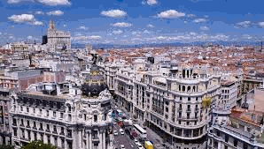

|  | |
|---|---|
| powrót Barcelona |
Madryt – stolica i największe miasto Hiszpanii, położony w środkowej części kraju na Wyżynie Kastylijskiej u podnóża Sierra de Guadarrama nad rzeką Manzanares. Centrum administracyjne ma powierzchnię 606 km² i 3,2mln ludzi. ludzi, natomiast region autonomiczny Comunidad de Madrid ma powierzchnię 8022 km² i prawie 6,5mln ludzi. Jest to trzecie co do wielkości miasto Unii Europejskiej po Londynie i Berlinie. Madryt jest siedzibą rządu, parlamentu, ministerstw, agencji i innych przedstawicielstw międzynarodowych, jak i też oficjalną rezydencją króla Hiszpanii. Na płaszczyźnie ekonomicznej Madryt jest czwartym najbogatszym miastem w Europie (po Londynie, Paryżu i Moskwie) oraz trzecim w ramach UE. Jest głównym centrum finansowym i biznesowym Hiszpanii.Znajduje się tu kilkanaście największych korporacji na świecie jak: Banco Santander – największy bank w strefie euro, Banco Bilbao Vizcaya Argentaria, Telefónica, Repsol YPF, Iberia LAE, Endesa czy FCC. Mieszczą się tutaj także instytucje związane z regulacją języka hiszpańskiego w świecie m.in.: Akademia Języka Hiszpańskiego, czy Królewska Akademia Hiszpańska. W badaniach dotyczących jakości życia, Madryt uplasował się na 16 miejscu wśród miast świata w 2015 roku według magazynu Monocle i na 51 miejscu wśród miast świata w 2017 roku według Mercer. |